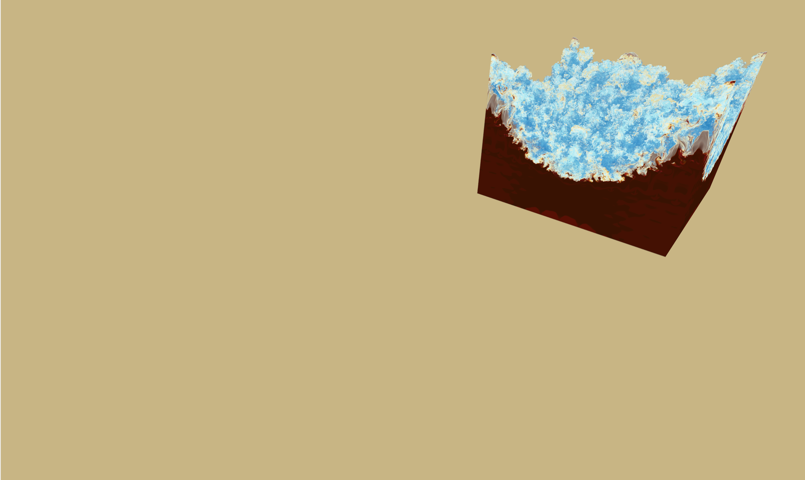
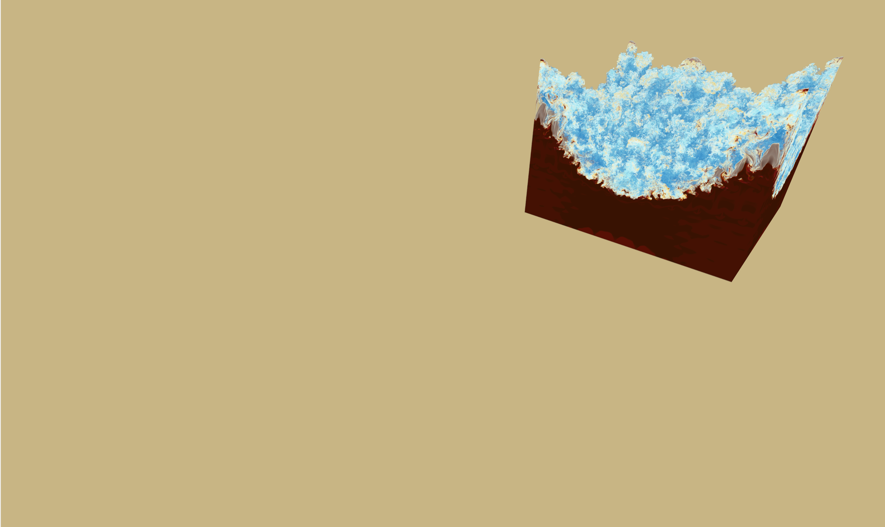
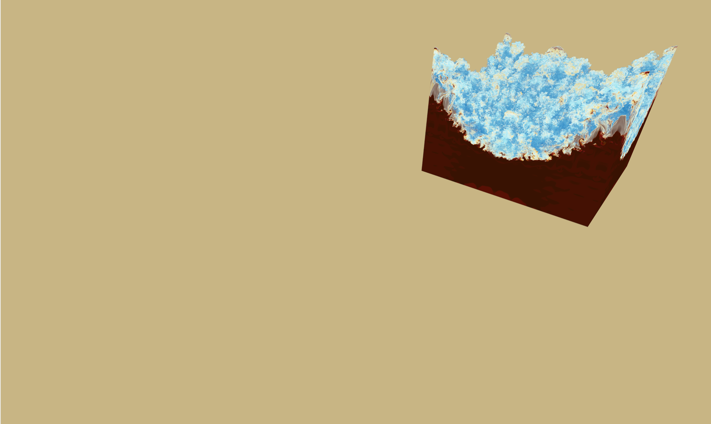
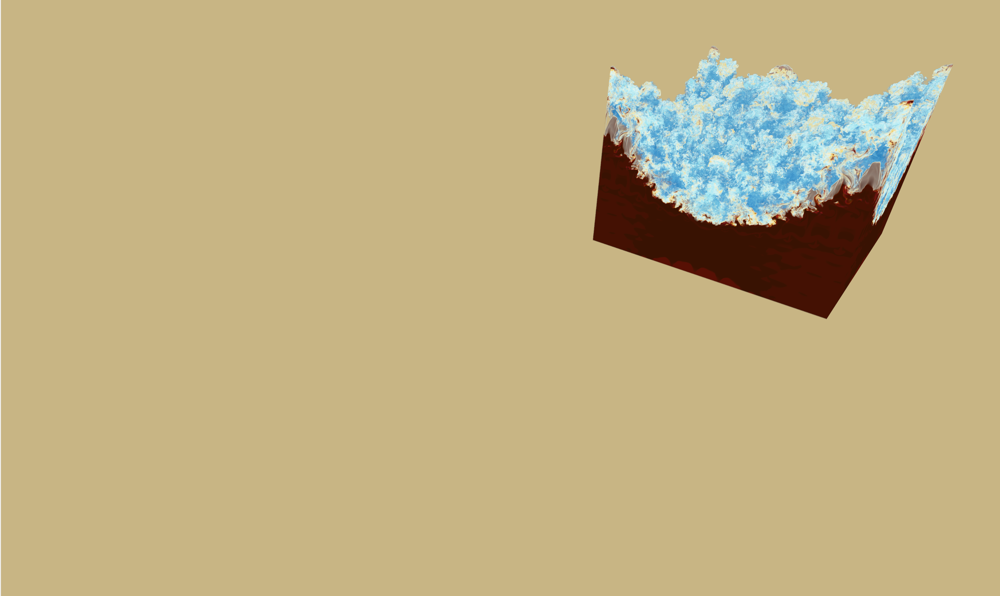

OSPRay features interactive CPU rendering capabilities geared towards Scientific Visualization applications. Advanced shading effects such as Ambient Occlusion, shadows, and transparency can be rendered interactively, enabling new insights into data exploration.
OSPRay includes a path tracer capable of interactively rendering photorealistic global illumination.
OSPRay supports high-fidelity interactive direct volume rendering with a number of state of the art features.
OSPRay parallel rendering on TACC's "Stallion" display wall.
OSPRay is directly integrated into ParaView 5.x. Implementations for VisIt, VMD, and other popular tools have also been developed.
OSPRay is Open Sourced under the Apache 2.0 license.
Run on large scale distributed-memory systems with a high-performance MPI backend. Shown is a 450GB direct numerical simulation dataset running interactively at TACC's Maverick cluster.